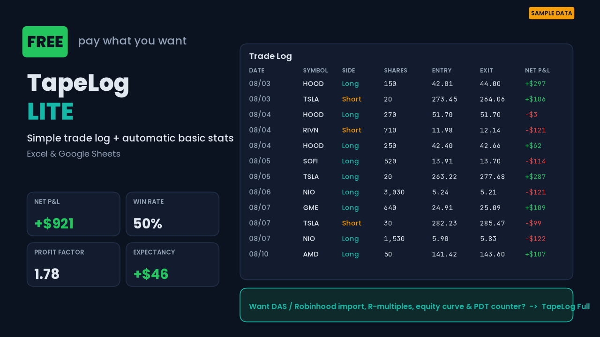

Log one round-trip trade per row. The sheet calculates net P&L after fees, win rate, average win/loss, profit factor, expectancy, largest win/loss, and running P&L. No macros. No signup. Works in Excel 2010+, Google Sheets, and LibreOffice Calc.
Download free .xlsx Also on Gumroad (pay what you want)

sample-exports/The full TapeLog Trading Journal ($24 one-time) adds one-paste DAS Trader Pro and Robinhood import, R-multiples, max drawdown, equity curve, P&L by setup/hour/weekday/ticker, a PDT day-trade counter, pre-market checklist with position sizer, and a Notion template.
Educational record-keeping tool only — not financial advice. Sample data is fictional. Not affiliated with DAS Inc. or Robinhood Markets, Inc.